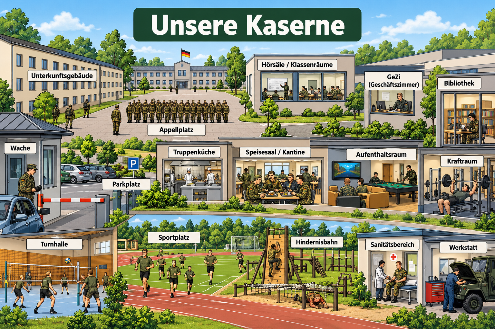

Unsere Kaserne
Die zehn Übungen
Wähle eine Aufgabe. Deine Antworten bleiben beim Wechsel erhalten. Mit „Überprüfen“ erhältst du sofort eine Rückmeldung.
Deutsch A1 · Lesetext und 10 interaktive Übungen

Wähle eine Aufgabe. Deine Antworten bleiben beim Wechsel erhalten. Mit „Überprüfen“ erhältst du sofort eine Rückmeldung.